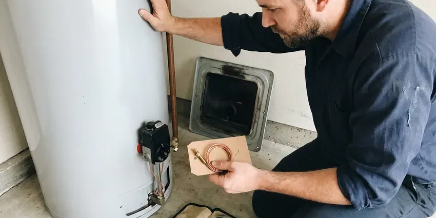
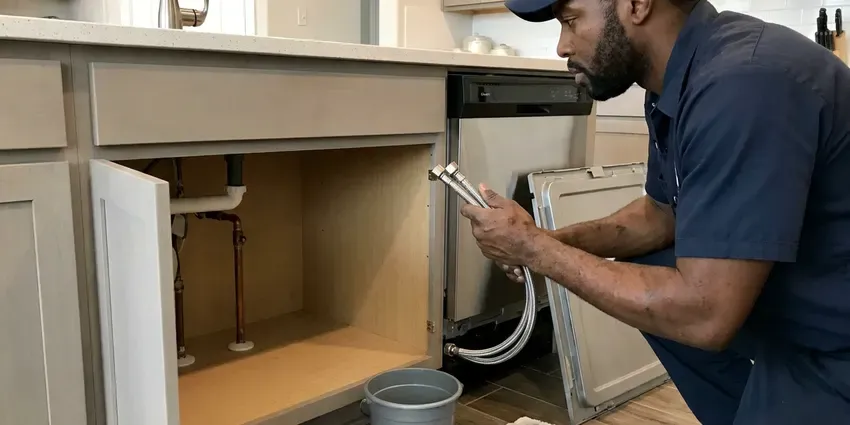

Foundation Leak Repair in Phoenix, AZ
Foundation leak repair with electronic detection, clear options and careful work for homeowners in Phoenix, AZ.
- Fast Electronic Leak Detection
- Reroute or Direct Repair
- Protects Soil and Structure
- Insurance Documentation Provided
Plumbing Leak Under Your Foundation? Get It Fixed in Phoenix, AZ.
Fast action protects your foundation, flooring and soil, so we prioritize foundation leak calls.
Foundation Leak Repair in Phoenix, AZ That Protects Your Home
CVR Plumbing understands that a foundation leak is both a plumbing problem and a structural risk. Arizona clay soil expands when wet and shrinks when dry, so a steady leak can move a foundation. We stop the water quickly and give you clear options to repair or reroute the line.
Our expertise includes:
- Electronic and acoustic leak locating beneath slabs and stem walls
- Direct repairs through concrete with proper patching and compaction
- Rerouting water lines overhead or through walls to bypass the foundation

Additional Plumbing Repair Services in Phoenix, AZ
We offer expert plumbing repair services across Phoenix, AZ to fix leaks, restore flow, and keep your system running smoothly.


Phoenix water heater repair specialists


Customers
Why Choose CVR Plumbing for Foundation Leak Repair in Phoenix, AZ?
Water under a foundation does not stay put. It spreads through the soil and can cause heaving, settling and cracks that cost far more to fix than the leak itself.
- Accurate Locating, We pinpoint the leak before cutting so we disturb as little concrete as possible.
- Multiple Options, We compare direct repair, reroute and repipe so you choose the best fit.
- Structure Aware, We watch for soil and slab damage and refer you to a structural engineer when needed.
Citywide Coverage
No matter which part of Phoenix you live in, we can get a technician to you quickly. Foundation leaks need prompt attention, and we treat them that way.
Experienced Team
Our technicians are trained in leak detection and foundation-related plumbing repair. They have worked under every type of foundation common in Arizona homes.
Safety-First Approach
Before cutting concrete, we scan for post-tension cables, rebar and buried utilities. Cutting a post-tension cable is dangerous and costly, so we never skip this step.
Trusted Certified Phoenix Plumbing Services Professionals
At CVR Plumbing, we take pride in providing certified plumbing services throughout Phoenix, AZ. Backed by leading industry credentials, our experienced plumbers combine technical skill with genuine customer care. Whether it is repair, installation, or maintenance, we follow strict safety and quality standards to deliver lasting results you can trust.
Call Us Now PHCC Plumbing Contractor Recognition
PHCC Plumbing Contractor Recognition Better Business Bureau (BBB) Accreditation
Better Business Bureau (BBB) Accreditation Angi Certified Pro
Angi Certified Pro ISO 9001 Quality Management Certification
ISO 9001 Quality Management CertificationThorough Foundation Leak Repair Services in Phoenix, AZ
Foundation Leak Detection in Phoenix
Accurate detection is the most important step in foundation leak repair. We isolate hot and cold lines and pressure test them to confirm a leak exists. Then we use acoustic listening equipment and electronic line tracing to find the exact spot beneath the foundation. Thermal imaging helps confirm hot water leaks by showing warm spots on the floor.

Direct Foundation Leak Repair in Phoenix, AZ
When the leak is in an accessible spot and the rest of the pipe is in good condition, direct repair is often the most economical choice. We cut a small opening in the floor, excavate to the pipe and replace the damaged section. The soil is compacted and the concrete is patched to match. Flooring can then be restored by your flooring contractor.
Water Line Reroute in Phoenix
Rerouting abandons the leaking line under the foundation and runs a new line through the attic or walls. This avoids breaking concrete and removes the risk of future leaks under the slab. We typically use PEX for reroutes because it is flexible and resists corrosion. Drywall openings are kept small and neat for easy patching.
Drain Line Leak Under Foundation in Phoenix, AZ
Leaks in drain lines under the foundation can be harder to detect because they are not under constant pressure. We use camera inspection and hydrostatic testing to find cracks and separated joints. Repairs may involve tunneling, cutting the slab or pipe lining. We explain the trade-offs of each method.
Post-Tension Slab Leak Repair in Phoenix
Many newer Arizona homes are built on post-tension slabs with steel cables under high tension. Cutting into these slabs requires care and scanning to avoid hitting a cable. We use ground-penetrating radar or other scanning methods before opening the floor. When risk is too high, rerouting the plumbing is usually the safer option.
Emergency Foundation Leak Repair in Phoenix, AZ
A major leak under the foundation can flood floors and saturate soil quickly. We help you shut off the water and dispatch a crew to locate and stop the leak. We isolate the affected line so you can have water elsewhere in the house while we plan the repair. Fast action reduces the risk of structural damage.
Commercial Foundation Leak Repair in Phoenix
Commercial buildings with slab foundations face the same leak risks as homes, often with more plumbing and more traffic. We locate and repair leaks under commercial slabs while working around business operations. Rerouting may be done after hours to minimize disruption. We provide detailed reports for property owners and insurers.

Foundation Leak Repair Cost Comparison in Phoenix, AZ
Direct repairs are often the lowest upfront cost but involve breaking concrete and may need flooring repairs. Reroutes cost a bit more but avoid concrete work and future leaks in the abandoned line. A full repipe is the most comprehensive option for homes with multiple leaks or aging pipe. We help you compare total costs, including flooring and drywall repairs.
Foundation Leak Repair Near Me in Phoenix, AZ
If you are searching for foundation leak repair near me, you probably have a warm floor, a damp spot or a high water bill. Our local technicians can reach you quickly with detection equipment. We find the leak and explain your options on the spot.
We know the soil, foundation types and building practices common in this area. That experience helps us choose the safest and most cost-effective repair. Call us to schedule leak detection today.
CVR Plumbing at a Glance
- Licensed and insured plumbers serving Phoenix, AZ
- 24/7 emergency service with same-day scheduling
- Upfront, flat-rate pricing before work begins
- 4.8-star rated by 713+ Arizona customers
Phoenix Map
Phoenix Information
- Population
- 1,650,070
- Area codes
- 602/480/623
- Service area
- Phoenix and communities within 40 miles
- Nearby
- Glendale, Scottsdale, Tempe, Peoria
Expansive clay soil common around Phoenix, AZ swells when a hidden pipe leak soaks it, so a small leak under a foundation can quickly turn into cracked slabs and shifting walls.
Expert Services
Trust our professionals for reliable CVR Plumbing solutions in Phoenix, AZ.
Our Specialized Plumbing Services in Phoenix, AZ
At CVR Plumbing, we provide a complete range of plumbing services across Phoenix, AZ. From leak detection to full system installations, our team ensures fast, precise, and affordable service for both residential and commercial properties. Explore our core services below:


Kitchen Plumbing near Phoenix


How Our Foundation Leak Repair Process Works in Phoenix, AZ
We follow a clear process to find the leak, choose the right repair and protect your home.
Request a Quote
Call (928) 470-9009 and describe what you are noticing, such as warm floors, cracks or a moving water meter. We schedule leak detection quickly.
Detect and Plan
We pressure test and locate the leak, then review direct repair and reroute options. You get a written price for each.
Repair and Verify
We complete the chosen repair and pressure test the line. Concrete is patched or walls are closed, and we confirm the leak is stopped.
Frequently Asked Questions About Foundation Leak Repair in Phoenix
Leak detection typically costs $150 to $450. Direct repairs through concrete usually range from $1,500 to $4,000, and reroutes often run $1,800 to $5,000 depending on length and access. Full repipes cost more and are quoted individually.
Many policies cover the cost of accessing the leak and repairing resulting damage, but not the pipe itself. We provide detailed documentation to help with claims.
Warm or damp spots on the floor, cracks in tile or concrete, mildew under carpet, the sound of running water and a water meter that moves with all fixtures off are common signs. Higher water bills are often the first clue.
Simple repairs often do not require a permit, but reroutes and repipes may, depending on your city. We pull permits when required.
Direct repair works well for a single leak in otherwise good pipe. Rerouting is often better when pipe is aging, the slab is post-tensioned or the leak is in a hard-to-reach spot. We help you weigh both.
Leak detection usually takes one to three hours. Direct repairs and reroutes typically take one to two days, depending on complexity.
Yes. Our repairs come with a written workmanship warranty, and materials carry manufacturer warranties. We explain coverage before starting work.
You can check your water meter with all fixtures off to confirm a leak. Locating the exact spot under a foundation requires specialized equipment and training.
What People Are Saying About Our Plumbing Experts?

Daniel K.
A pipe burst at 11 pm and they actually answered. The plumber showed up within the hour, shut everything down, and had us back to normal the next morning. Could not ask for more.
Emergency Plumbing · Phoenix, AZ
Patricia H.
We had a slab leak that two other companies could not find. CVR Plumbing located it in under an hour, explained our options, and the price matched the quote to the dollar.
Slab Leak Repair · Glendale, AZRobert G.
The trenchless sewer replacement saved our front yard. They walked us through the camera inspection footage first so we knew exactly what we were paying for.
Sewer Line Replacement · Glendale, AZ
Mark T.
When our office needed drain cleaning, CVR Plumbing provided quick, reliable service. The plumber arrived on time and made sure every drain flowed perfectly before leaving. Very satisfied.
Drain Cleaning · Phoenix, AZ
Emily R.
I called CVR Plumbing for plumbing repair, and the technician was fast, polite, and thorough. They explained the problem clearly and fixed it the same day. I will definitely hire them again. Highly recommended!
Plumbing Repair · Avondale, AZ
Sofia M.
Two new toilets installed in one visit, no mess left behind, and the tech even adjusted a faucet he noticed was dripping. Fair pricing and really friendly.
Toilet Installation · Glendale, AZ